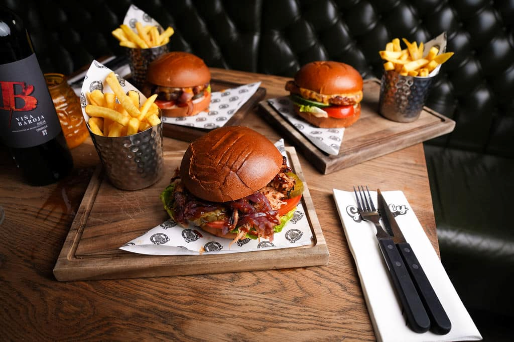

Grizzly is a restaurant with a classic American comfort food in a casual, welcoming setting. Think juicy burgers, crispy fries, and hearty steaks the kind of meal that feels familiar no matter where you re from. A solid choice when you want something satisfying after a day of sightseeing. Popular picks include the house cheeseburger and the smoked BBQ ribs
See Menu
